SeqTrans: Automatic Vulnerability Fix via Sequence to Sequence Learning
下面分享一篇我发表在安全学术圈上的论文笔记。原文
原文标题：SeqTrans: Automatic Vulnerability Fix via Sequence to Sequence Learning
原文作者：Jianlei Chi, Yu Qu, Ting Liu, Member, IEEE, Qinghua Zheng, Member, IEEE, Heng Yin, Member, IEEE
原文链接：https://ieeexplore.ieee.org/abstract/document/9729554
发表期刊：IEEE Transactions on Software Engineering
笔记作者：senu11@SecQuan
笔记小编：ourren@SecQuan
一句话概括就是作者认为漏洞修复数据集是bug修复数据集的子集，可以利用bug修复数据集在 NMT 预训练一个模型，然后再用漏洞修复数据集训练进行微调就可以生成补丁修复漏洞。
1.简介
在工业界和学术界都有许多自动程序修复（APR）或称为代码迁移的工作。一些 APR 研究侧重于自动生成修复模板或称为修复模式,如Meditor、api usage adaptation;一些 APR 研究侧重于从历史修复记录中挖掘相似的代码更改，例如 CapGen 和 FixMiner;其他方法利用带有约束求解的静态和动态分析来完成补丁生成; IDE 还提供特定类型的自动更改,例如，重构、生成 getter 和 setter、添加覆盖/实现方法或其他模板代码等。最近，将机器学习 (ML) 技术引入程序修复也引起了很多兴趣并成为一种趋势，它们构建通用模型以使用以前的代码更改捕获统计特征并自动修复正在插入的代码。大多数 APR 方法严重依赖特定领域的知识或预定义的更改模板，这导致 可扩展性有限。
motivation
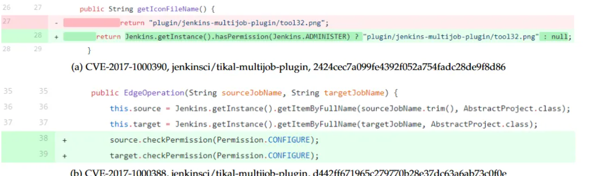
如上图两个CVE的修复所示，CVE-20171000390 和 CVE-2017-1000388属于同一CWE: CWE-732。这启发作者，有可能从对应于相同或相似 CWE 的历史漏洞修复中学习常见模式去修复漏洞。
文章提出了一种称为 SeqTrans 的新方法来利用历史漏洞修复提供建议并自动修复源代码。为了捕获易受攻击代码周围的上下文信息，利用数据流依赖关系来构建代码序列并将它们提供给转换器模型；引入了微调策略来克服小样本问题。SeqTrans 可以与其他漏洞检测工具一起工作，例如 Eclipse Steady，可以在函数级别定位漏洞。
Fine-tuning
微调，获取经过训练的神经网络的权重，并将其用作目标任务的初始化或固定特征提取器。作者在原文中解释使用微调有以下好处：1）克服样本量小：训练大型神经网络不切实际，无法避免过度拟合。若想利用大型神经网络超强的特征提取能力，只能靠微调已经训练好的模型； 2）后期训练成本低，速度快； 3）无需一遍又一遍地造轮子：前人花大力气训练出来的模型，大概率会比从头造出的模型更强。
文章在包含 1,282 次commit的数据集上评估 SeqTrans，这些提交含有624个漏洞，涉及 205 个 Java 项目。模型结果因不同类型的 CWE 而异，在 CWE-287（不正确的身份验证）和 CWE-863（不正确的授权）等特定类型的 CWE 中表现良好，但无法对某些 CWE（如 CWE-918（服务器端请求伪造））做出任何预测，SeqTrans 可以覆盖数据集中大约 25% 的 CWE 类型。
2.数据集
文章使用了两个数据集：Tufano和Ponta，Tufano数据集是bug修复(bug repair)数据集，Ponta是漏洞修复数据集。文章是在Java语言上进行实验。
Tufano数据集包含 780000 个bug修复提交和近 200 万句对的历史bug修复记录。对于每个bug修复提交，使用 GitHub Compare API 提取bug修复前后的源代码。每个bug修复记录都包含错误（提交前）和修复（提交后）代码。该数据集丢弃了与非 Java 文件相关的提交和在bug修复提交中创建的新文件，并且还丢弃了影响超过五个 Java 文件的提交。
Ponta数据集含有624个漏洞，自 2008 年到 2019 年，涉及 205 个不同开源 Java 项目，共1282个修复这些漏洞的提交。数据集中 29 个没有 CVE 标识符，46 个有编号机构分配的 CVE 标识符，但在 NVD 中不可用，这些漏洞已从数据集中删除，非重复 CVE 的最终数量为 549 个，相关提交为 1068 个，归类为 77 个 CWE。
下面是两个数据集的token分布：
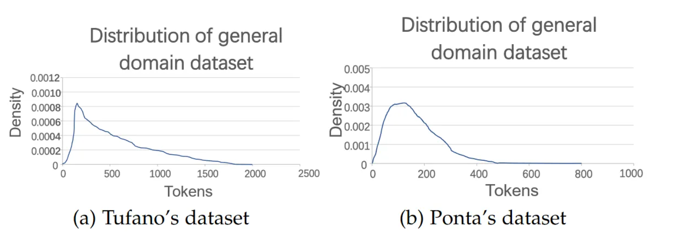
已经确认的CVE数量接近150K，而Ponta 数据集和AOSP数据集 等漏洞修复数据集仅包含 624 和 1380 个公开披露的漏洞，这也就是上文说到小样本问题的来由。
3.框架
整个SeqTrans框架如下图所示，由三个阶段组成：预处理、预训练和微调、预测和补丁生成。
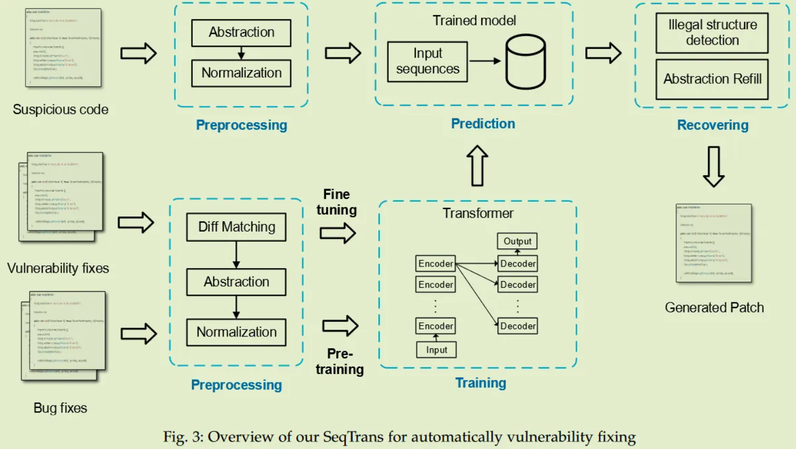
3.1.预处理
此步骤将从两个数据集中提取差异上下文：bug repair(下文称为bug修复)和vulnerability fixing(下文称为漏洞修复)数据集。然后，基于数据流依赖性执行规范化和抽象以提取 def-use 链。def-use 链输入到 transformer 模型中，以更少的噪声捕获围绕漏洞的语法和结构信息。
3.1.1.差异代码提取
Tufano数据集提供了从bug修复提交(bug-fixing commits)中提取的原始源代码对，易于使用。Ponta 的数据集仅提供包含漏洞修复记录的 CSV 表，该表包含漏洞修复记录如下：
(vulnerability id; repository url; commit id)
vulnerability id是在repository url的开源代码存储库中的commit id中修复的漏洞的标识符。数据集中的每一行代表一个修复漏洞的提交，作者利用爬虫爬取。拉取请求 (PR) 数据将根据commit id提取，然后利用 JGit 检索 PR 代码更改前后的 Java 文件版本，称为 ChangePair(CP)，每个 CP 包含一个代码差异列表。作者从 Ponta 和 Tufano 的数据集中分别提取了 5K 、650K CP。
从 PR 中获取到 CP 后，需要定位差异上下文。对于轻微的代码结构更改(如换行和添加空格)，并不需要，故作者使用抽象语法树 (AST) 来搜索代码差异，利用差异搜索工具GumTree搜索细粒度的 AST 节点映射。
之后，每个 CP 都表示为代码差异列表：
CP = ${(st_{src}, st_{dst})}1$, …, ${(st{src}, st_{dst})}_n$
其中$(st_{src}, st_{dst})$ 表示来自源文件和目标文件的语句。
然后，围绕代码差异提取数据流依赖关系，来构建 def-use 链。 def-use 链包含来自易受攻击语句的所有变量定义。使用数据流依赖关系的原因如下所示：
1）易受攻击语句周围的上下文对于理解风险行为和捕获结构关系很有价值。但是，在class级别使用大量不相关的代码来维护完整的上下文过于繁重。
2）数据流依赖为transformation提供了足够的上下文。如果需要修改一个语句，则很有可能同时共同更改其定义。
3）控制流依赖项通常包含分支，其太长而无法tokenization(下文称为标记化)。
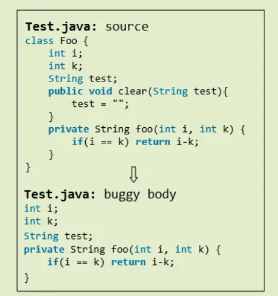
如上图所示，假设函数“foo”含有漏洞，算法将保留该函数和漏洞声明、所有全局变量、所有对易受攻击语句具有数据依赖性的语句，位于同一函数中易受攻击语句之后的语句被删除。
可以从 AST 中提取 def-use 依赖项。该过程可以分为三个部分：
1）遍历整个AST，分别标注变量名、常量名、字符串名。这些名称分布在 AST 的叶节点上。这一步将在修改后的 Gumtree 算法的第一阶段完成。
2）从叶子节点向上遍历，查找定义好的父节点，记录位置。
3）通过定第二步的定位记录定位易错语句的相关定义语句。
另一个名为Understand的静态分析工具用于将位置记录转换为代码。 SeqTrans 将改变每个 CP，如下所示：
CP = ${((def_1, …, def_n, st_{src}), (def_2, …, def_m, st_{dst}))}1$, …, ${((def_1, …, def_n, st{src}), (def_2, …, def_m, st_{dst}))}_n$
文章忽略涉及添加或删除整个函数/文件的代码更改。
3.1.2.规范化与分词
在 NMT 模型的训练过程中，存在一些缺点。因为 NMT 模型输出单词的概率分布，所以它们在处理许多可能的单词时会变得非常慢，故需要人为地限制模型处理的最常见单词的数量，也称为词汇量。为了减少词汇量，需要在抽象上下文的同时保留源代码的语义信息。
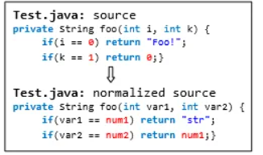
规范化过程如上图所示，将变量名称替换为“var1”，，，“varn”, 每个文字和字符串也被替换为 “num1”, . . . ，“numn”和“liter”。这样做的原因如下：
1）减少词汇量和特定token的频率；
2）减少数据的冗余，提高数据的一致性。
并且维护一个字典来存储原始token和预测后要重新填充的替代token之间的映射，用来恢复预测之后的代码。通过上述优化，就可以控制词汇表的大小，使 NMT 模型专注于从不同的代码更改中学习通用模式。
然后将每个抽象 CP 拆分为一系列token，每个 CP 限制为 1500 个token。 根据 Gowda 的工作，词汇表大小设置为 8k。
3.2.预训练和微调
由于bug修复数据集大，且漏洞修复和bug修复的任务有一些共同点，即漏洞修复可以被认为是bug修复的一个子集，训练过程从bug修复数据集开始。可以从通用任务域数据集和bug修复数据集中学习和捕获部分通用特征和超参数。预训练后，将在漏洞修复数据集上微调 transformer 模型。这个数据集比第一个数据集小得多，因为很难确认和收集足够大的数据集来进行训练。在第一个模型的基础上，会细化一些权重，使模型更适合漏洞修复的任务。这个阶段也成为训练阶段，在此阶段训练 SeqTrans 来转换易受攻击的代码并生成多个预测候选。
3.2.1.预训练
在预训练过程中，利用来自 Tufano bug修复数据集的广义领域语料库来进行第一次训练。通过对bug修复数据集的预训练，可以学习到许多修复经验和特征，这些经验和特征可以应用于漏洞修复。使用第 3.1.1. 节中讨论的方法提取 $CPs_{general}$ 列表,这些包含易受攻击版本和修复版本差异上下文的$CPs_{general}$ 将提供给NMT。预训练模型将训练 300K 步直到收敛，因为通过实验发现validation accuracy在这一步训练时变得平滑并且不再波动。在接下来的微调过程中，每个模型每 5K 步会断点备份，会选择在validation数据集上准确率最高的模型作为最终模型。
3.2.2.微调
微调的目的是在目标数据集远小于源数据集时提高模型的泛化能力。虽然fine-tuning在神经语言（NL）领域被广泛使用，并且提供了很多预训练模型，但在编程语言（Programming language，PL）领域却很少有这样的预训练模型，因此原文开展训练通用领域模型。在之前训练过程中训练的模型将使用漏洞修复语料库进行微调，以便将bug修复数据集训练中学到的知识迁移到漏洞修复任务中。步长设置为预训练步长的 1/10，模型选择与上一步相同。
考虑到过拟合，只微调模型的最后一层。训练过程将更新词汇语料库并持续到收敛。学习率比预训练过程更小，为 0.01。为了减轻灾难性遗忘( Gururangan 和 OpenNMT 提到，一些序列在再训练模型中翻译得不好，如unidiomatic结构或 UNKs，而在基础模型中翻译得很好)，再训练应该结合 indomain and generic 数据。原文将部分通用域数据混合到特定域数据中以生成新的组合，在混合后的数据尽量不扩大语料库规模的基础上，粗略的选择了一些数据混合到特殊领域数据中，最终训练集的大小增加了一倍，而测试集不变。
3.2.3.编码
编码器由 6 层相同的堆栈组成，每层由一个多头自注意力机制和一个前馈神经网络共两个子层组成，每个子层都采用了残差连接和归一化，将子层的输出表示为：
sub_layer_output = Layer_normization(x+(SubLayer(x)))
Sublayer(x) 是由子层本身实现的函数；自注意力机制从先前的编码器接收一组编码，并权衡它们之间的相关性输出一组编码，然后前馈神经网络处理每个输出编码，最终作为输入传递给下一个编码器。填充掩码用于确保编码器不会注意填充token，所有子层以及嵌入层产生维度 $d_{model}$ = 512 的输出。
3.2.4.解码
解码器包含 6 层相同的堆栈，每一层都由三个子层组成：添加了一个注意力子层来执行多头注意力，以从编码器生成的编码中提取相关信息；包含填充掩码和序列掩码的掩码机制被用于防止关注后续位置的情况，并确保位置 i 的预测只能依赖于小于 i 的位置的已知输出，其他部分与编码器相同。
3.2.4.注意力机制
注意机制的目的是使用一组编码将上下文合并到序列中。对于每个token，注意机制需要一个维度为 $d_k$ 的查询向量Q、一个维度为 $d_k$ 的键向量K，一个维度为 $d_v$ 的值向量V,这些向量是通过在训练过程中训练的三个矩阵的嵌入相乘创建的。注意力机制的本质其实是一个寻址过程，是注意力机制减轻神经网络模型复杂性的体现：不是将所有N个输入都馈送到神经网络进行计算，而是从 X 中选择一些与任务相关的信息并将其馈送到神经网络。 Self-attention 是指查询、键和值都使用序列编码创建的情况。这个注意力机制的输出Z：
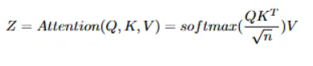
transformer中使用的多头注意力将多个注意力机制并行实现，然后将得到的编码组合在一个过程中。
3.3.预测和补丁生成
输入一个易受攻击的文件，需要定位可疑代码并根据训练好的模型进行预测，可以通过以前的漏洞定位工具或在人类安全专家的帮助下完成漏洞定位部分。 SeqTrans 提供多个候选预测供用户选择,语法检查器Findbugs 用来检查并过滤掉包含语法错误的预测。最后，Refill Abstraction（下文称为抽象语句重新填充）并生成补丁。下文详细说明本段中提到的技术。
3.3.1.方法总体概述
预测的结果是抽象和分词后的结果,也可能包含语法错误，不能直接在编译器里面编译，所以作者用两个步骤来解决这些问题：抽象语句重新填充 和 语法检查。（刘等人指出，由于对故障定位的不同假设，很难比较不同的修复技术，故原文中假设使用的漏洞定位方法无瑕疵)
下面使用开源项目 activemq 的漏洞修复来说明预测和补丁生成过程。
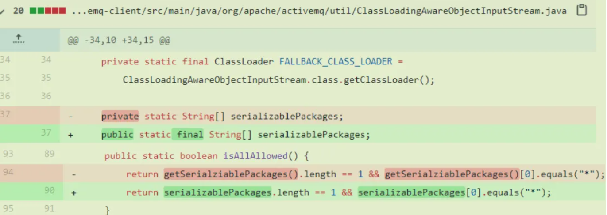
上图是 activemq 的一条CVE修复记录，包含三个语句修复，补丁推断和生成的过程有三步：
1）如上文中提到的，需要对输入代码进行抽象和分词，按照下图中描述的类似过程将其分解为序列。在下图中，抽象变量用蓝色标记，常量标记为黄色，文字标记为绿色，每个序列都将维护一个字典以供恢复，序列的位置也会被记录下来，以便后续回填;
2）这些序列被输入到 transformer 模型中，用 beam search 为每个易受攻击的语句生成五个预测候选，输出也是如下图所示的抽象序列，通常，排名最高的预测将被选择和利用。其包含预测语句及其上下文；
3）在选择预测并应用语法检查时回填所有抽象语句。
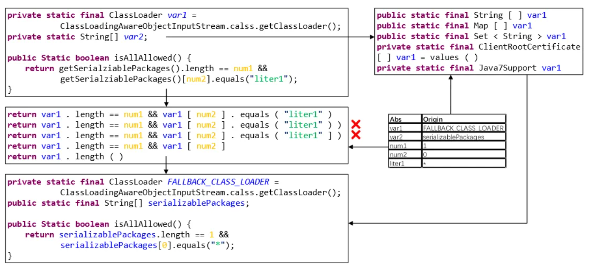
3.3.2.抽象语句回填
SeqTrans在将语句进行抽象之前会维护一个字典来存储恢复所需的信息，维护的字典将为整个CP存储相关的变量、常量和文字。预测完成后，字典中的所有抽象语句将被重新填充，在此过程中代码会自动缩进，所有的注释都会删除。作者认为在这个尺度下搜索空间爆炸不是一个重要的问题。SeqTrans的一个缺点是字典中包含的映射来自源文件，如果抽象语句是需要修复的内容，那么SeqTrans很难理解和推断，所能做的就是根据词典减少相应的抽象，例如，若一个println函数改变了它想要打印的内容，该模型很难预测它想要打印什么；若一个预测的抽象在字典中找不到映射，就把原始的抽象内容复制到当前位置。
3.3.3.语法检查
作者将beam search与语法检查工具相结合，分析预测中包含的句法和语法错误。作者使用的静态分析工具FindBugs的版本是3.0.1。引入静态分析的动机是在执行测试用例之前，尽可能多地过滤掉无效的生成补丁。
在SeqTrans中，一个生成的补丁需要先通过编译器，然后进行FindBugs检测。若候选预测不能通过检验过程，则进行筛选。Findbugs即使在预提交版本上也可能触发警告，故只检查预测后添加的警告消息。例如，上图中第二个和第三个候选包含一个语法错误，无法通过FindBugs的检查，则删除这两位候选。即使用FindBugs来检查候选项，以确保预测的五个候选项引入尽可能少的新bug。
4.实验
RQ1: 基于 NMT 的SeqTrans是漏洞预测的可行方法？SeqTrans 优于其他最先进的技术？
RQ2: 所用 ML 模型的哪些特征会影响 SeqTrans 的性能？
RQ3: SeqTrans 如何预测特定类型的 CWE？
作者使用了三种数据集来验证实验
第一个验证集 $T_{cross}$ 是 10 折交叉验证。交叉验证仅适用于微调过程,所有九个子样本将共享相同的预训练集,最终平均10次结果。这种方法的优点是每个数据样本都作为训练数据和测试数据，避免了过度学习和学习不足的状态，得到的结果更有说服力。
第二个验证集 $T_{cwe}$ 是根据 CVE 修复时间顺序来模拟利用历史漏洞修复记录修复后续可疑代码的实际开发过程。按时间序列对 Ponta 数据集中的 CVE 样本进行排序，并使用 2008 年至 2017 年的 CVE 修复记录作为训练集（708 $CP_s$），2018 年和 2019 年的 CVE 修复记录用作验证（136 $CP_s$）和测试集（150 $CP_s$），测试集含有42种CWE。前两次验证在抽象语句回填部分不包含编译和语法检查。
在第三个测试集 $T_{tra}$ 中，将选择包含最多 CVE（120 个 CP）的五个开源项目作测试集，如下表所示，修复其他项目的记录作训练集。将可疑文件输入到SeqTrans的模型中，生成补丁，如果预测的文件通过了相关的测试用例并且没有引入新的故障，认为是一个成功的预测。
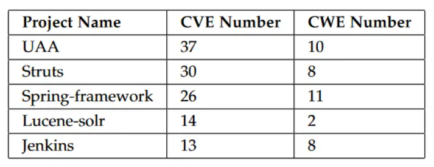
Answer to RQ1：
作者开展两个数据集的联合训练和独立训练，将bug修复数据集分为不相交的两部分：$G_{train}$用来训练,$G_{val}$用来验证,将漏洞修复数据集分为不相交的$S_{train’}$,$S_{val}$,$S_{test}$。$S_{test}$用于验证联合训练和独立训练的性能，本实验旨在验证微调能否帮助小样本克服数据集规模问题，从一般领域任务中学习，并迁移到特定领域任务中。结果如下表所示。
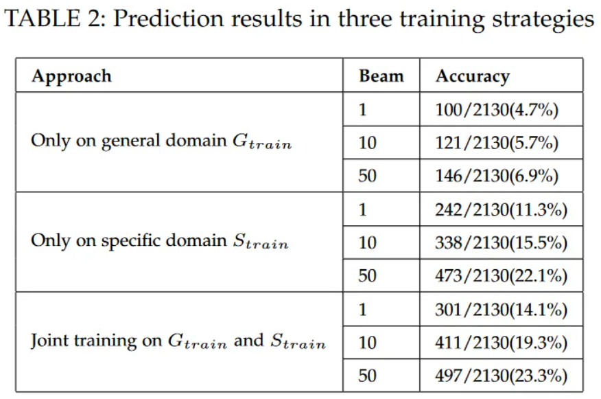
将 SeqTrans 对CVEs数量最多的5个开源项目进行传统评估。结果如下表所示。
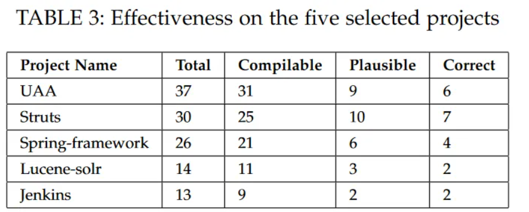
将 SeqTrans 与一些最先进的技术进行比较。SeqTrans full、SeqTrans single是指经过预训练和微调的SeqTrans模型，以及仅使用Ponta数据集训练的SeqTrans模型。结果如下表所示。
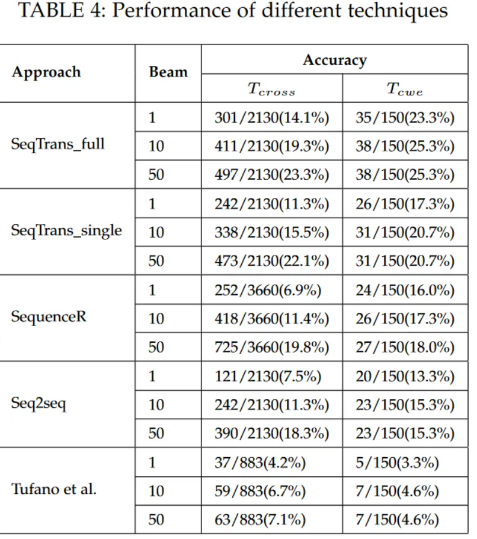
下图给出了在$T_{tra}$上进行实验的结果，Compilable表生成的补丁可以通过编译；Plausible表生成的补丁可以通过编译和测试；Correct表通过编译、测试、人工检查；check表findbugs的有效性，即通过静态分析的补丁；
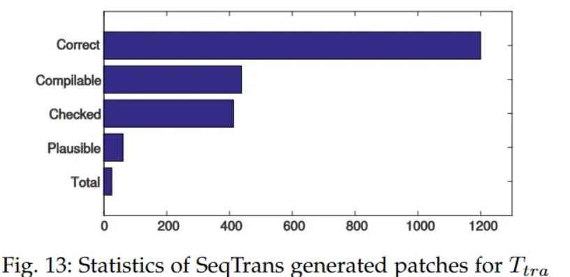
beam从1增加到50时Tcross的性能如下图所示
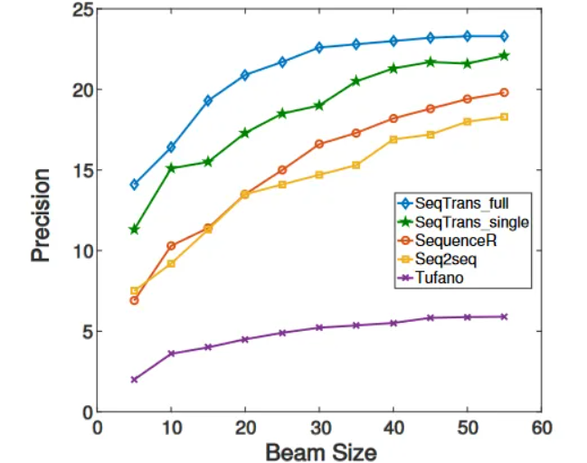
beam从1增加到50时不同技术的结果如下所示
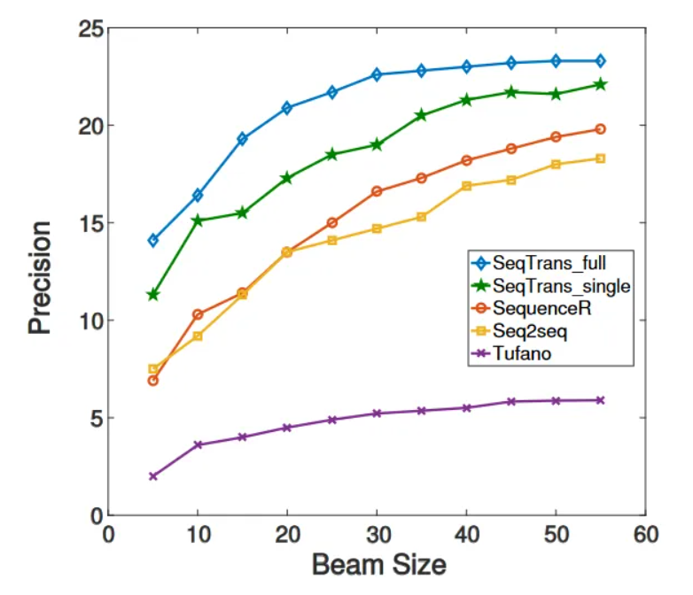
Answer to RQ2：
这一部分实验使用 $T_{cross}$ 验证集。下图是不同参数的训练结果。
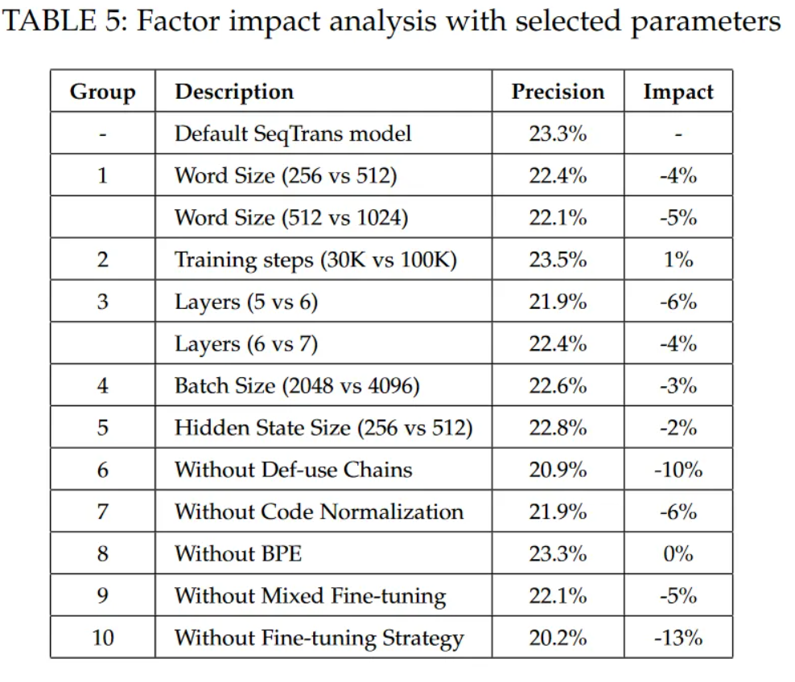
不同的模型层次和训练步数结果如下图所示。
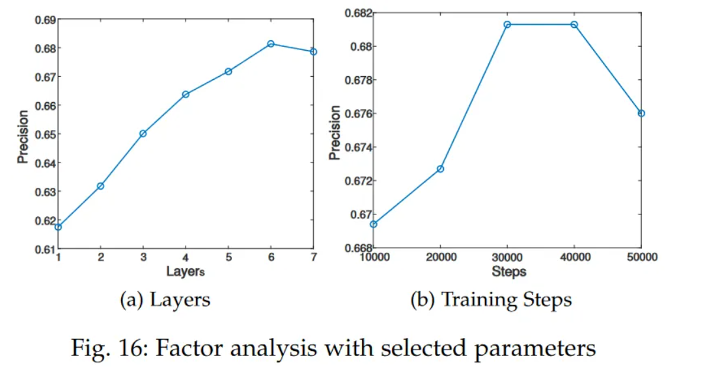
Answer to RQ3：
当Beam = 50时 $T_{cross}$ 和 $T_{cwe}$ 中各CWE的训练结果如下图所示
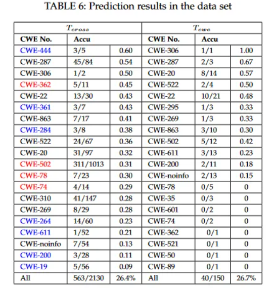
将代码进行不同的转换得到的结果如下图所示
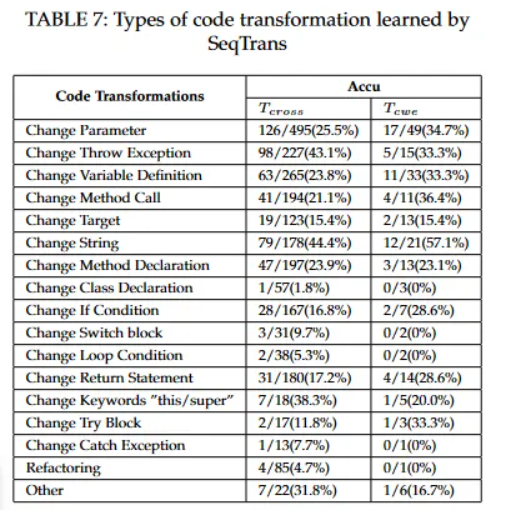
上图中各个参数的意义如下图所示
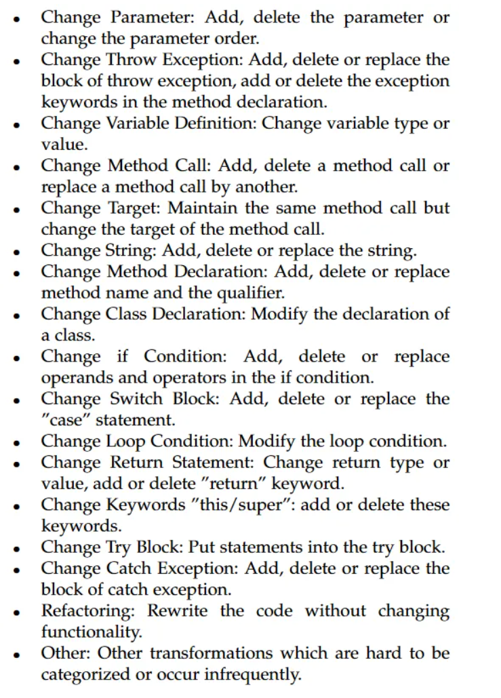
5.思考
漏洞修复确实可以看作是bug修复的一部分，但是这两者之间是否具有细微的区别，所以才导致结果不是很好？